Press the brand
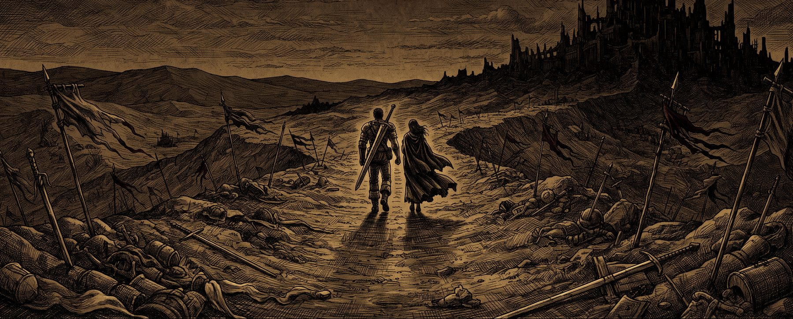
Join us for the wedding of
October 06, 2026
a Tuesday
Five o'clock in the evening
The two of us
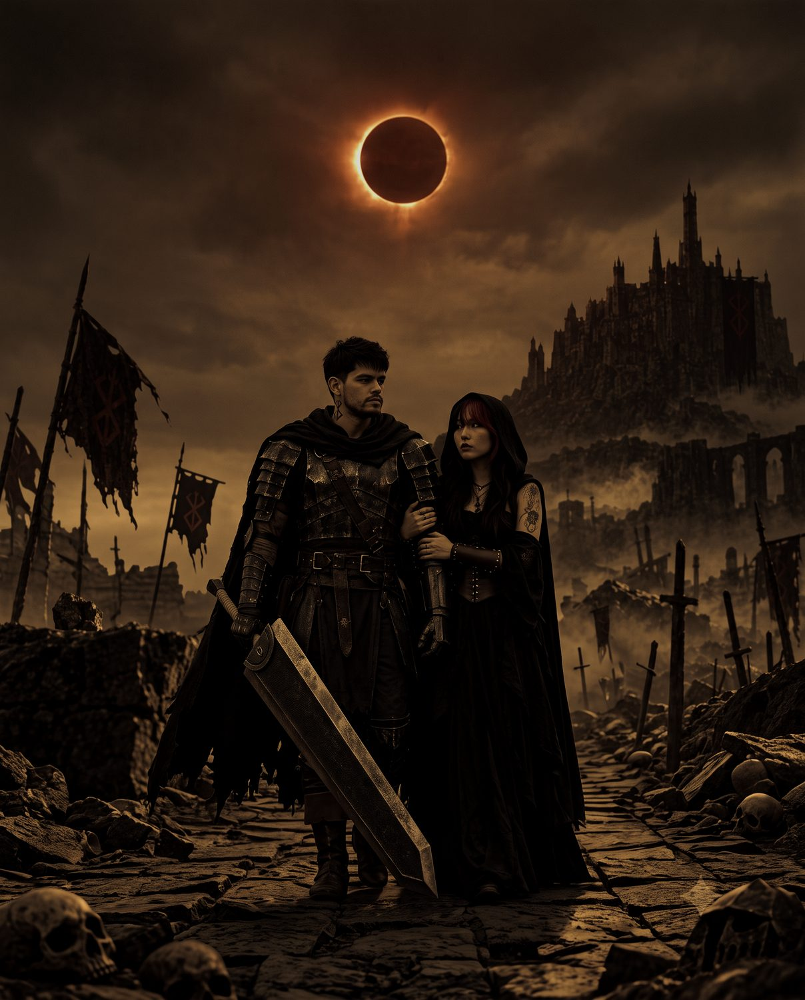
Somewhere between the eclipse and the reception, there are two people who just like the same things.
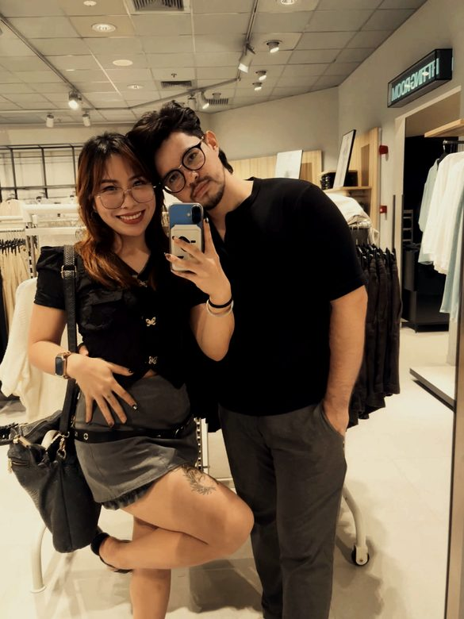
Before the day
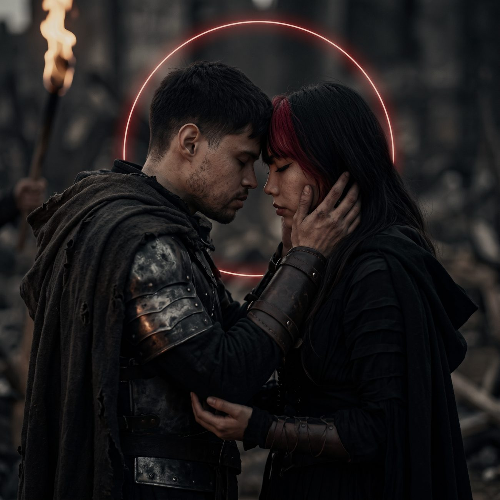
We are not, in real life, at war. We did want one photograph where it looks like we might be.
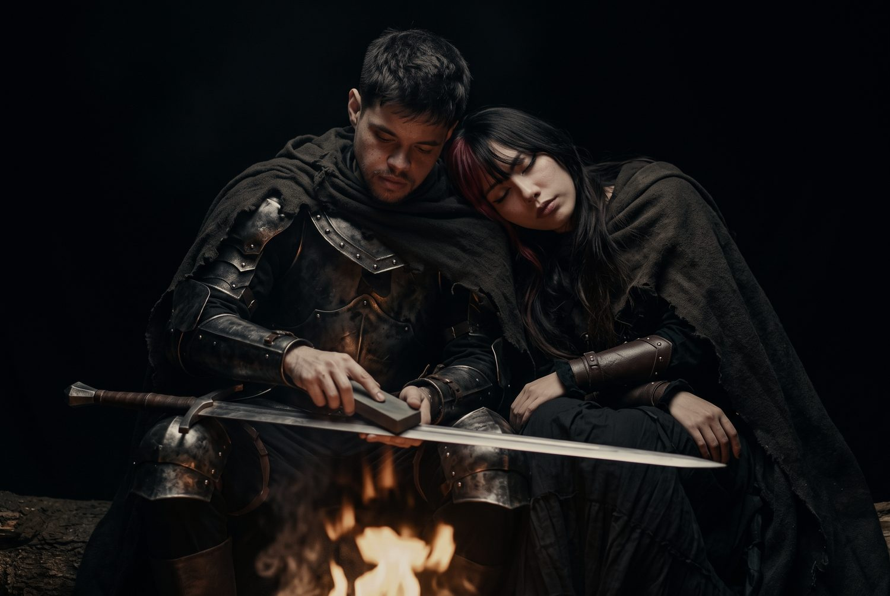
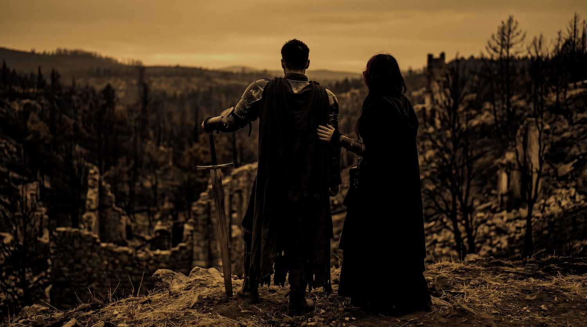
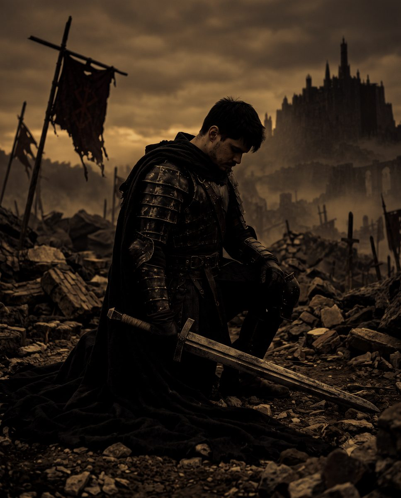
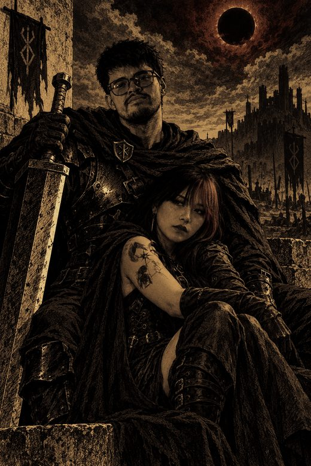
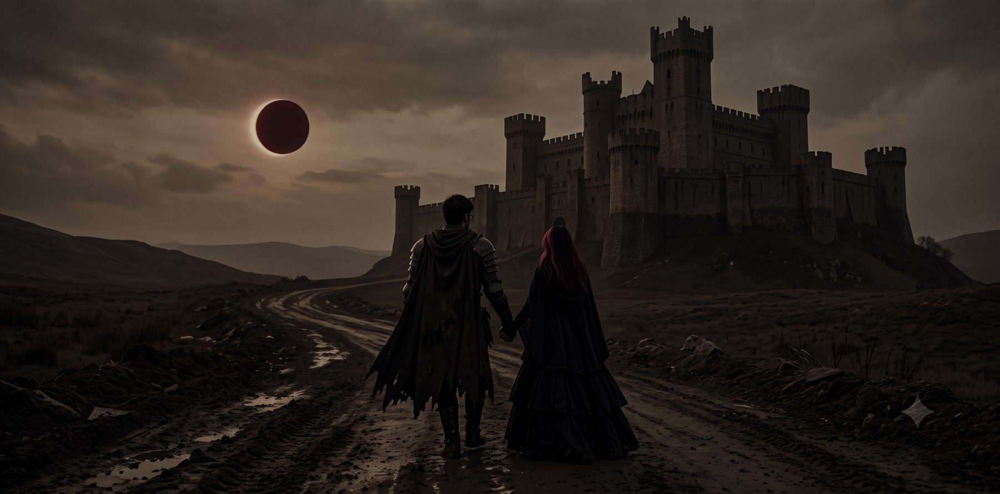
The reception will be at
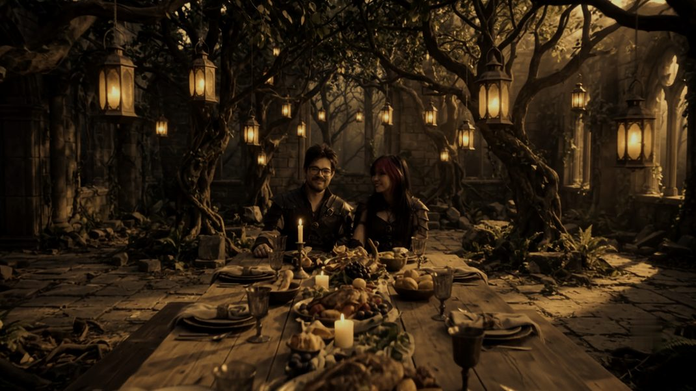
The ceremony venue isn't on the invitation yet — send it over and it will sit right here, with its own map link.
What to wear
We kindly ask that you wear the below colour tones for our special day.
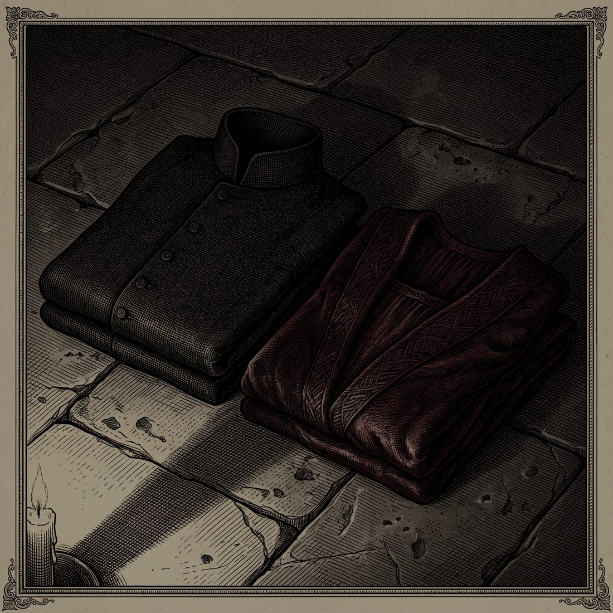
Anything in those two families works — a deep wine, a merlot, an oxblood. The evening is indoors, and it will be warm.
Order of the day
Come half an hour before the ceremony so nobody is seated in a hurry.
Five o'clock in the evening, as printed on the invitation.
At Smoque Bistro.
Seated or buffet — say which, and guests will know what to expect.
And whatever follows it.
How guests are getting home.
Getting there and staying
On Carlos P. Garcia East Avenue in Tagbilaran City, the main road through town. Add the nearest landmark — guests find it faster than an address.
How much parking there is, and whether cars can be left overnight.
Tagbilaran airport and the Tagbilaran pier are both close — add how long each takes, and whether anyone is being met.
Hotels you have held rooms at, the booking code, and the date the block is released.
Kindly reply by date
Good to know